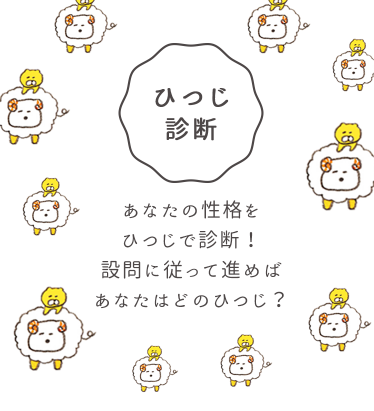
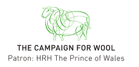

The Woolmark Company is the global authority on wool. Through our extensive network of relationships spanning the international textile and fashion industries, we highlight Australian wool’s position as the ultimate natural fibre and premier ingredient in luxury apparel.
The Woolmark logo is one of the world’s most recognised and respected brands, providing assurance of the highest quality, and representing pioneering excellence and innovation from farm through to finished product.
The Woolmark Company is a subsidiary of Australian Wool Innovation, a not-for-profit enterprise that conducts research, development and marketing along the worldwide supply chain for Australian wool on behalf of about 55,000 woolgrowers that help fund the company.